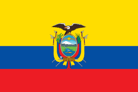
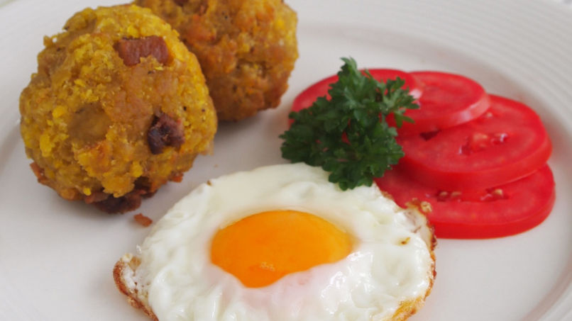

Hola bienvenidos al menu de platillos de Ecuador.
Platillo |
Imagen |
Informacion |
| 1-Encebollado de pescado. |
.jpg) |
Ésta es otra sopa preferida por los ecuatorianos. Se prepara con un tipo de atún llamada albacora. Dicen los que saben que es el plato perfecto para sacarte de una resaca después de una noche de tragos, por eso parece que, su hora favorita de consumirlo es entre la madrugada y la mañana. Este sencillo manjar consiste en un caldo preparado con yuca, cebolla colorada, atún y tomate.
|
|
2-Bolón de verde.
|  |
Este platillo habitualmente se consume para desayunar o merendar a lo largo del día. Se acostumbra a servir con café y con huevos fritos. Es muy fácil de hacer. Es una mezcla de plátanos verdes amasado con chicharrones hasta que toma forma de pelota y del tamaño de un puño. Es muy parecido al mofongo, dominicano o el fufú cubano. |
|
3-Crema de zapallo.
|
 |
Esta crema de Calabaza es una de la más populares en la nación. Quizás sea, por su frescura, pocos ingredientes, delicioso sabor y fácil de hacer . Solo lleva cebolla, ajo, comino, tomates y el caldo de pollo (o también se puede usar un caldo de verduras para una opción vegetariana). Se puede servir con queso fresco, queso feta o queso de cabra y además adicionarle unas rebanadas de aguacate y rociarla con unas cebollitas bien picadas. |